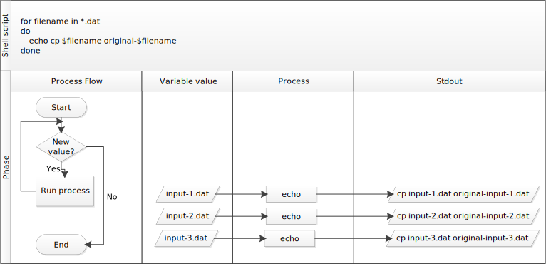

5 루프(Loops)
반복적으로 명령어를 실행하게 함으로써 자동화를 통해서 루프는 생산성 향상에 핵심이 된다. 와일드카드와 탭 자동완성과 유사하게, 루프를 사용하면 타이핑 상당량(타이핑 실수)을 줄일 수 있다. 와일드카드와 탭 자동완성은 타이핑을 (타이핑 실수를) 줄이는 두가지 방법이고, 또 다른 방법은 쉘이 반복해서 특정 작업을 수행하게 하는 것이다.
basilisk.dat, minotaur.dat, unicorn.dat 등으로 이름 붙여진 게놈 데이터 파일이 수백 개 있다고 가정하자. 이번 장에, 단지 3개 예제 파일만 있는 exercise-data/creatures 디렉토리를 사용할 것이 지만 동일한 원칙은 훨씬 더 많은 파일에 즉시 적용될 수 있다.
파일의 구조는 동일하다: 처음 세 줄에는 일반명칭(COMMON NAME), 분류(CLASSIFICATION), 갱신된 날짜(UPDATED)가 표시되고 그 다음 줄에는 DNA 서열이 표시됩된다. 파일을 살펴보자:
$ head -n 5 basilisk.dat minotaur.dat unicorn.dat디렉토리에 있는 파일을 변경하고 싶지만,
원본 파일을 original-basilisk.dat와 original-unicorn.dat으로 이름을 변경해서 저장한다. 하지만 다음 명령어를 사용할 수 없다:
$ cp *.dat original-*.dat왜냐하면 상기 두 파일 경우에 전개가 다음과 같이 될 것이기 때문이다:
$ cp basilisk.dat unicorn.dat original-*.dat상기 명령어는 파일을 백업하지 않고 대신에 오류가 발생된다:
cp: target `original-*.dat' is not a directorycp 명령어는 입력값 두개 이상을 받을 때 이런 문제가 발생한다. 이런 상황이 발생할 때, 마지막 입력값을 디렉토리로 예상해서 모든 파일을 해당 디렉토리로 넘긴다. creatures 디렉토리에는 original-*.dat 라고 이름 붙은 하위 디렉토리가 없기 때문에, 오류가 생긴다.
5.1 반복 루프
대신에, 리스트에서 한번에 연산작업을 하나씩 수행하는 루프(loop)를 사용할 수 있다. 교대로 각 파일에 대해 첫 3줄을 화면에 출력하는 단순한 예제가 다음에 나와 있다:
$ for filename in basilisk.dat unicorn.dat
> do
> head -n 3 $filename # 루프 내부에 들여쓰기는 가독성에 도움을 준다.
> done
COMMON NAME: basilisk
CLASSIFICATION: basiliscus vulgaris
UPDATED: 1745-05-02
COMMON NAME: unicorn
CLASSIFICATION: equus monoceros
UPDATED: 1738-11-24for 루프 내부에 코드 들여쓰기
for 루프 내부의 코드를 들여쓰는 것이 일반적인 관행이다. 들여쓰는 유일한 목적은 코드를 더 읽기 쉽게 하는 것 밖에 없다. for 루프를 실행하는데는 꼭 필요하지는 않다.
쉘이 키워드 for를 보게 되면, 쉘은 리스트에 있는 각각에 대해 명령문 하나(혹은 명령문 집합)을 반복할 것이라는 것을 알게 된다. 루프를 반복할 때마다(iteration 이라고도 한다), 현재 작업하고 있는 파일 이름은 filename으로 불리는 변수(variable)에 할당된다. 리스트의 다음 원소로 넘어가기 전에 루프 내부 명령어가 실행된다. 루프 내부에서, 변수 이름 앞에 $ 기호를 붙여 변수 값을 얻는다: $ 기호는 쉘 해석기가 변수명을 텍스트나 외부 명령어가 아닌 변수로 처리해서 값을 해당 위치에 치환하도록 지시한다.
이번 경우에 리스트는 파일이름이 두개다: basilisk.dat, unicorn.dat. 매번 루프가 돌 때마다 파일명을 filename 변수에 할당하고 head 명령어를 실행시킨다. 즉, 루프가 첫번째 돌 때 $filename 은 basilisk.dat이 된다. 쉘 해석기는 basilisk.dat 파일에 head 명령어를 실행시켜서 basilisk.dat 파일의 첫 3줄을 화면에 출력시킨다.
두번째 반복에서, $filename은 unicorn.dat이 된다. 이번에는 쉘이 head 명령어를 unicorn.dat 파일에 적용시켜 unicorn.dat 파일 첫 3줄을 화면에 출력시킨다. 리스트에 원소가 두개라서, 쉘은 for 루프를 빠져나온다.
변수명을 분명히 구분하는데, 중괄호 내부에 변수명을 넣어서 변수로 사용하는 것도 가능하다: $filename 은 ${filename}와 동치지만, ${file}name와는 다르다. 이 표기법을 다른 사람 프로그램에서 찾아볼 수 있다.
루프안에서 타이핑을 할 때, 쉘 프롬프트가 $에서 >으로 바뀐다. 두번째 프롬프트는, >, 온전한 명령문 타이핑이 끝마치지 않았음을 상기시키려고 다르게 표기된다. 세미콜론 ; 을 사용해서 두 명령어로 구성된 문장을 단일 명령줄로 단순화한다.
예제 5.1 (루프 내부의 변수) 이번 예제는 data-shell/molecules 디렉토리를 가정한다. ls 명령어를 던지면 출력결과는 다음과 같다:
cubane.pdb ethane.pdb methane.pdb octane.pdb pentane.pdb propane.pdb다음 코드의 출력결과는 어떻게 나오는가?
$ for datafile in *.pdb
> do
> ls *.pdb
> done이제 다음 코드의 출력결과는 무엇인가?
$ for datafile in *.pdb
> do
> ls $datafile
> done왜 상기 두 루프 실행결과는 다를까?
첫번째 코드 블록은 루프를 돌릴 때마다 동일한 출력결과를 출력한다. 배쉬는 루프 몸통 내부 와일드카드 *.pdb을 확장해서 .pdb로 끝나는 모든 파일을 매칭시킨다. 확장된 루프는 다음과 같이 생겼다:
$ for datafile in cubane.pdb ethane.pdb methane.pdb octane.pdb pentane.pdb propane.pdb
> do
> ls cubane.pdb ethane.pdb methane.pdb octane.pdb pentane.pdb propane.pdb
> done
cubane.pdb ethane.pdb methane.pdb octane.pdb pentane.pdb propane.pdb
cubane.pdb ethane.pdb methane.pdb octane.pdb pentane.pdb propane.pdb
cubane.pdb ethane.pdb methane.pdb octane.pdb pentane.pdb propane.pdb
cubane.pdb ethane.pdb methane.pdb octane.pdb pentane.pdb propane.pdb
cubane.pdb ethane.pdb methane.pdb octane.pdb pentane.pdb propane.pdb
cubane.pdb ethane.pdb methane.pdb octane.pdb pentane.pdb propane.pdb두번째 코드 블록은 루프를 돌 때마다 다른 파일을 출력한다. datafile 파일 변수값이 $datafile을 통해 평가되고 ls 명령어를 사용해서 파일 목록을 출력하게 된다.
cubane.pdb
ethane.pdb
methane.pdb
octane.pdb
pentane.pdb
propane.pdb쉘 프롬프트로 > 기호가 사용되는 것을 확인했지만, > 기호는 출력결과를 방향변경(redirect) 하는데도 사용된다. 유사하게 $ 기호를 쉘 프롬프트로 사용했지만, 앞에서 살펴봤듯이, 쉘로 하여금 변수값을 추출하는데도 사용된다. 쉘이 > 혹은 $ 기호를 출력하게 되면, 사용자가 뭔가 타이핑하길 기대하고 있다는 것으로 해당 기호는 프롬프트를 의미한다. 사용자 본인이 > 혹은 $ 기호를 타이핑하게 되면, 출력결과를 방향변경하거나 변수 값을 끄집어내는 지시를 쉘에 전달하게 된다.
data-shell/creatures 디렉토리의 예제로 돌아가자. 사람 코드를 읽는 독자에게 목적을 좀더 명확히 하기 위해서 루프의 변수명을 filename로 했다. 쉘 자체는 변수명이 어떻게 작명되든지 문제삼지 않는다. 만약 루프를 다음과 같이 작성하거나:
$ for x in basilisk.dat unicorn.dat
> do
> head -n 3 $x
> done혹은:
$ for temperature in basilisk.dat unicorn.dat
> do
> head -n 3 $temperature
> done둘다 정확하게 동일하게 동작한다. 이렇게는 절대 하지 마세요. 사람이 프로그램을 이해할 수 있을 때만 프로그램이 유용하기 때문에, (x같은) 의미없는 이름이나, (temperature 같은) 오해를 불러일으킬 수 있는 이름은 독자가 생각하기에 당연히 프로그램이 수행해야 할 작업을 프로그램이 수행하지 못하게 할 가능성을 높인다.
예제 5.2 (파일 집합 제한걸기) data-shell/molecules 디렉토리에서 다음 루프를 실행하게 되면 출력결과는 어떻게 될까?
$ for filename in c*
> do
> ls $filename
> done- 어떤 파일도 출력되지 않는다.
- 모든 파일이 출력된다.
cubane.pdb,octane.pdb,pentane.pdb파일만 출력된다.cubane.pdb파일만 출력된다.
정답은 4. 와일드카드 * 문자는 0 혹은 그 이상 문자를 매칭하게 된다. 따라서, 문자 c로 시작하는 문자 다음에 0 혹은 그 이상 문자를 갖는 모든 파일이 매칭된다.
대신에 다음 명령어를 사용하면 출력결과는 어떻게 달라지나?
$ for filename in *c*
> do
> ls $filename
> done- 동일한 파일이 출력된다.
- 이번에는 모든 파일이 출력된다.
- 이번에는 어떤 파일도 출력되지 않는다.
cubane.pdb와octane.pdb파일이 출력된다.octane.pdb파일만 출력된다.
정답은 4. 와일드카드 * 문자는 0 혹은 그 이상 문자를 매칭하게 된다. 따라서, c 앞에 0 혹은 그 이상 문자가 올 수 있고, c 문자 다음에 0 혹은 그 이상 문자가 모두 매칭된다.
shell-lesson-data/creatures 디렉토리에서 예제를 계속해서 학습해보자. 다음에 좀더 복잡한 루프가 있다:
$ for filename in *.dat
> do
> echo $filename
> head -n 100 $filename | tail -n 20
> done쉘이 *.dat을 전개해서 쉘이 처리할 파일 리스트를 생성한다. 그리고 나서 루프 몸통(loop body) 부분이 파일 각각에 대해 명령어 두개를 실행한다. 첫 명령어 echo는 명령 라인 매개변수를 표준 출력으로 화면에 뿌려준다. 예를 들어:
$ echo hello there상기 명령은 다음과 같이 출력된다:
hello there이 사례에서, 쉘이 파일 이름으로 $filename을 전개했기 때문에, echo $filename은 단지 파일 이름만 화면에 출력한다. 다음과 같이 작성할 수 없다는 것에 주의한다:
$ for filename in *.dat
> do
> $filename
> head -n 100 $filename | tail -n 20
> done왜냐하면, $filename이 basilisk.dat으로 전개될 때 루프 처음에 쉘이 프로그램으로 인식한 basilisk.dat를 실행하려고 하기 때문이다. 마지막으로, head와 tail 조합은 어떤 파일이 처리되든 81-100줄만 선택해서 화면에 뿌려준다. (파일이 적어도 100줄로 되었음을 가정)
5.2 파일, 디렉토리, 변수명 공백
공백(whitespace)을 사용해서 루프를 돌릴 때 리스트의 각 원소를 구별했다. 리스트 원소중 일부가 공백을 갖는 경우, 해당 원소를 인용부호로 감싸서 사용해야 된다. 데이터 파일이 다음과 같은 이름으로 되었다고 가정하자:
red dragon.dat
purple unicorn.dat다음을 사용하여 파일을 처리하려고 한다면:
$ for filename in "red dragon.dat" "purple unicorn.dat"
> do
> head -n 100 "$filename" | tail -n 3
> done파일명에 공백(혹은 다른 특수 문자)를 회피하는 것이 더 단순하다. 상기 파일은 존재하지 않는다. 그래서 상기 코드를 실행하게 되면, head 명령어는 파일을 찾을 수가 없어서 예상되는 파일명을 보여주는 오류 메시지가 반환된다:
head: cannot open ‘red dragon.dat’ for reading: No such file or directory
head: cannot open ‘purple unicorn.dat’ for reading: No such file or directory상기 루프 내부 $filename 파일명 주위 인용부호를 제거하고 공백 효과를 살펴보자. creatures 디렉토리에서 코드를 실행시키게 되면 unicorn.dat 파일에 대한 결과를 루프 명령어 실행 결과를 얻게 됨에 주목한다:
head: cannot open ‘red’ for reading: No such file or directory
head: cannot open ‘dragon.dat’ for reading: No such file or directory
head: cannot open ‘purple’ for reading: No such file or directory
CGGTACCGAA
AAGGGTCGCG
CAAGTGTTCC원래 파일 복사문제로 되돌아가서, 다음 루프를 사용해서 문제를 해결해 보자:
$ for filename in *.dat
> do
> cp $filename original-$filename
> done상기 루프는 cp 명령문을 각 파일이름에 대해 실행한다. 처음에 $filename이 basilisk.dat로 전개될 때, 쉘은 다음을 실행한다:
cp basilisk.dat original-basilisk.dat두번째에는 명령문은 다음과 같다:
cp unicorn.dat original-unicorn.datcp 명령어는 아무런 출력결과도 만들어내지 않기 때문에, 루프가 제대로 돌아가는지 확인하기 어렵다. echo로 명령문 앞에 위치시킴으로써, 명령문 각각이 제대로 동작되고 있는 확인하는 것이 가능하다. 다음 도표를 통해서 스크립트가 동작할 때 어떤 작업이 수행하고 있는지 상술하고 있다. 또한 echo 명령어를 사려깊이 사용하는 것이 어떻게 훌륭한 디버깅 기술이 되는지도 보여주고 있다.

5.3 이력를 통한 반복
앞선 작업을 반복하는 또다른 방법은 history 명령어를 사용하는 것이다. 실행된 마지막 수백 개 명령어 리스트를 얻고 나서, 이들 명령어 중 하나를 반복실행하기 위해서 !123(“123”은 명령 숫자로 교체된다.)을 사용한다. 예를 들어 Nelle이 다음과 같이 타이핑한다면:
$ history | tail -n 5
456 ls -l NENE0*.txt
457 rm stats-NENE01729B.txt.txt
458 bash goostats NENE01729B.txt stats-NENE01729B.txt
459 ls -l NENE0*.txt
460 history그리고 나서, 단순히 !458을 타이핑함으로써, NENE01729B.txt 파일에 goostats을 다시 실행할 수 있게 된다.
이력(history)에 접근하는 단축 명령어가 다수 존재한다.
Ctrl-R단축키는 “reverse-i-search” 이력 검색모드로 입력한 텍스트와 매칭되는 가장 최근 명령어를 이력에서 찾아서 제시한다.Ctrl-R단축키를 한번 혹은 그 이상 누르게 되면 그 이전 매칭을 검색해 준다.!!명령어는 바로 직전 명령어를 불러온다. (키보드 위쪽 화살표를 사용하는 것보다 더 편리할수도 편리하지 않을 수도 있다.)!$명령어는 마지막 명령문의 마지막 단어를 불러온다. 기대했던 것보다 훨씬 유용할 수 있다:bash goostats NENE01729B.txt stats-NENE01729B.txt명령문을 실행한 후에less !$을 타이핑하게 되면stats-NENE01729B.txt파일을 찾아준다. 키보드 위쪽 화살표를 눌러 명령라인을 편집하는 것보다 훨씬 빠르다.
예제 5.3 (루프 내부에서 파일에 저장하기 - 1부) data-shell/molecules 디렉토리에 있다고 가정하자. 다음 루프의 효과는 무엇인가?
$ for alkanes in *.pdb
> do
> echo $alkanes
> cat $alkanes > alkanes.pdb
> donefructose.dat,glucose.dat,sucrose.dat을 출력하고,sucrose.dat에서 나온 텍스트를xylose.dat에 저장된다.fructose.dat,glucose.dat,sucrose.dat을 출력하고, 모든 파일 3개에서 나온 텍스트를 합쳐xylose.dat에 저장된다.fructose.dat,glucose.dat,sucrose.dat,xylose.dat을 출력하고,sucrose.dat에서 나온 텍스트를xylose.dat에 저장된다.- 위 어느 것도 아니다.
- 순차적으로 각 파일의 텍스트가
alkanes.pdb파일에 기록된다. 하지만, 루프가 매번 반복될 때마다 파일에 덮어쓰기가 수행되어서 마지막alkanes.pdb파일 텍스트만alkanes.pdb파일에 기록된다.
예제 5.4 (루프 내부에서 파일에 저장하기 - 2부) 이번에도 data-shell/molecules 디렉토리에 있다고 가정하고, 다음 루프 실행 출력결과는 무엇일까?
$ for datafile in *.pdb
> do
> cat $datafile >> all.pdb
> donecubane.pdb,ethane.pdb,methane.pdb,octane.pdb,pentane.pdb파일에 나온 모든 모든 텍스트가 하나로 붙여져서all.pdb파일에 저장된다.ethane.pdb파일에 나온 텍스트만all.pdb파일에 저장된다.cubane.pdb,ethane.pdb,methane.pdb,octane.pdb,pentane.pdb,propane.pdb파일에서 나온 모든 텍스트가 하나로 풑여져서all.pdb파일에 저장된다.cubane.pdb,ethane.pdb,methane.pdb,octane.pdb,pentane.pdb,propane.pdb파일에서 나온 모든 텍스트가 화면에 출력되고all.pdb파일에 저장된다.
정답은 3. 명령어 실행 출력결과를 방향변경하여 덮었는 것이 아니라 >> 기호는 파일에 덧붙인다. cat 명령어에서 나온 출력결과가 파일로 방향변경되어 어떤 출력결과도 화면에 출력되지는 않는다.
예제 5.5 (시운전(Dry Run)) 루프는 한번에 많은 작업을 수행하는 방식이다 — 만약 잘못된 것이 있다면, 한번에 실수를 대단히 많이 범하게 된다. 루프가 수행하는 작업을 점검하는 한 방법이 실제로 루프를 돌리는 대신에 echo 명령어를 사용하는 것이다. 실제로 명령어를 실행하지 않고, 다음 루프가 실행할 명령어를 머릿속으로 미리보고자 한다고 가정한다:
$ for file in *.pdb
> do
> analyze $file > analyzed-$file
> done아래 두 루프 사이에 차이는 무엇이고, 어느 것을 시운전으로 실행하고 싶은가?
# Version 1
$ for file in *.pdb
> do
> echo analyze $file > analyzed-$file
> done# Version 2
$ for file in *.pdb
> do
> echo "analyze $file > analyzed-$file"
> done두번째 버전을 실행하면 좋을 것이다. 달러 기호로 접두명을 주었기 때문에 루프 변수를 확장해서 인용부호로 감싼 모든 것을 화면에 출력한다.
첫번째 버전은 echo analyze $file 명령을 수행해서 analyzed-$file 파일로 출력결과를 방향변경하여 저장시킨다. 따라서 파일이 쭉 자동생성된다:analyzed-cubane.pdb, analyzed-ethane.pdb …
두가지 버전을 직접 실행해보고 출력결과를 살펴보자! analyzed-*.pdb 파일을 열어서 파일에 기록된 내용도 살펴본다.
예제 5.6 (중첩루프(Nested Loops)) 서로 다른 화합물과 서로 다른 온도에서 반응 속도 상수를 측정하는 실험을 추진해야 한다. 이 작업을 수행하는데 적합한 디렉토리 구조를 설정한다고 가정해 보자. 다음 코드 실행결과는 어떻게 될까?
$ for species in cubane ethane methane
> do
> for temperature in 25 30 37 40
> do
> mkdir $species-$temperature
> done
> done중첩 루프(루프 내부에 루프가 포함됨)를 생성하게 된다. 외부 루프에 각 화학물이, 내부 루프(중첩된 루프)에 온도 조건을 반복하게 되서, 화학물과 온도를 조합한 새로운 디렉토리가 쭉 생성된다.
직접 코드를 실행해서 어떤 디렉토리가 생성되는지 확인한다!
5.4 사례: 많은 파일 처리하기
넬(Nelle)은 이제 goostats 프로그램(논문 지도교수가 작성한 쉘 스크립트)을 사용해서 데이터 파일을 처리할 준비가 되었다. goostats 프로그램은 표본추출 단백질 파일에서 통계량을 산출하는데 인자를 두개 받는다:
- 입력파일 (원본 데이터를 포함)
- 출력파일 (산출된 통계량을 저장)
아직 쉘을 어떻게 사용하는지 학습단계에 있기 때문에, 단계별로 요구되는 명령어를 차근히 작성하기로 마음먹었다. 첫번째 단계는 적합한 파일을 선택했는지를 확인하는 것이다 — ‘Z’가 아닌 ’A’ 혹은 ’B’로 파일이름이 끝나는 것이 적합한 파일이라는 것을 명심한다. 홈 디렉토리에서 시작해서, 박사과정 Nelle이 다음과 같이 타이핑한다:
$ cd north-pacific-gyre/2012-07-03
$ for datafile in NENE*[AB].txt
> do
> echo $datafile
> done
NENE01729A.txt
NENE01729B.txt
NENE01736A.txt
...
NENE02043A.txt
NENE02043B.txt다음 단계는 goostats 분석 프로그램이 생성할 파일이름을 무엇으로 할지 결정하는 것이다. “stats”을 각 입력 파일에 접두어로 붙이는 것이 간단해 보여서, 루프를 변경해서 작업을 수행하도록 한다:
$ for datafile in NENE*[AB].txt
> do
> echo $datafile stats-$datafile
> done
NENE01729A.txt stats-NENE01729A.txt
NENE01729B.txt stats-NENE01729B.txt
NENE01736A.txt stats-NENE01736A.txt
...
NENE02043A.txt stats-NENE02043A.txt
NENE02043B.txt stats-NENE02043B.txtgoostats을 아직 실행하지는 않았지만, 이제 확신할 수 있는 것은 올바른 파일을 선택해서, 올바른 출력 파일이름을 생성할 수 있다는 점이다.
명령어를 반복적으로 타이핑하는 것은 귀찮은 일이지만, 더 걱정이 되는 것은 Nelle이 타이핑 실수를 하는 것이다. 그래서 루프를 다시 입력하는 대신에 위쪽 화살표를 누른다. 위쪽 화살표에 반응해서 컴퓨터 쉘은 한줄에 전체 루프를 다시 보여준다. (스크립트 각 부분이 구분되는데 세미콜론이 사용됨):
$ for datafile in NENE*[AB].txt; do echo $datafile stats-$datafile; done왼쪽 화살표 키를 사용해서, Nelle은 echo명령어를 bash goostats으로 변경하고 백업한다:
$ for datafile in NENE*[AB].txt; do bash goostats $datafile stats-$datafile; done엔터키를 누를 때, 쉘은 수정된 명령어를 실행한다. 하지만, 어떤 것도 일어나지 않는 것처럼 보인다 — 출력이 아무것도 없다. 잠시뒤에 Nelle은 작성한 스크립트가 화면에 아무것도 출력하지 않아서, 실행되고 있는지, 얼마나 빨리 실행되는지에 대한 정보가 없다는 것을 깨닫는다. 컨트롤+C(Control-C)를 눌러서 작업을 종료하고, 반복할 명령문을 위쪽 화살표로 선택하고, 편집해서 다음과 같이 작성한다:
$ for datafile in NENE*[AB].txt; do echo $datafile; bash goostats $datafile stats-$datafile; done쉘에 ^A, 콘트롤+A(Control-A, Ctrl-a)를 타이핑해서 해당 라인 처음으로 가고, ^E (Ctrl-e, Control-E)를 쳐서 라인의 끝으로 이동한다.
이번에 프로그램을 실행하면, 매 5초간격으로 한줄을 출력한다:
NENE01729A.txt
NENE01729B.txt
NENE01736A.txt
...1518 곱하기 5초를 60으로 나누면, 작성한 스크립트를 실행하는데 약 2시간 정도 소요된다고 볼 수 있다. 마지막 점검으로, 또다른 터미널 윈도우를 열어서, north-pacific-gyre/2012-07-03 디렉토리로 가서, cat stats-NENE01729B.txt을 사용해서 출력파일 중 하나를 면밀히 조사한다. 출력결과가 좋아보인다. 그래서 커피를 마시고 그동안 밀린 논문을 읽기로 한다.
모든 파일 앞부분 살펴보기
shell-lesson-data/exercise-data/creatures 디렉토리에 유니콘, 미노타우르, 바시리스크 괴물 3종 유전자 정보가 담겨있다. 괴물 3종이라 다행이지 수십 수백 괴물의 유전자 정보가 담겨있다면 야근을 해도 끝나지 못할 엄청난 파일 정보가 디렉토리에 담긴 것이다. 해당 디렉토리에 있는 각 파일 5줄만 출력하는 프로그램을 작성해보자.
프롬프트: shell-lesson-data/exercise-data/creatures 디렉토리로 이동한 후 for 문을 사용해서 확장자가 .dat인 모든 파일을 대상으로 각 파일별로 첫 5줄만 출력하세요.
$ sgpt -s "shell-lesson-data/exercise-data/creatures 디렉토리로 이동한 후 for 문을 사용해서 확장자가 .dat인 모든 파일을 대상으로 각 파일별로 첫 5줄만 출력하세요."
cd shell-lesson-data/exercise-data/creatures && for file in *.dat; do head -n 5 "$file"; done
[E]xecute, [D]escribe, [A]bort: D
This shell command changes the directory to "shell-lesson-data/exercise-data/creatures" and then prints the first 5 lines of each file with the extension ".dat" in that directory.
[E]xecute, [D]escribe, [A]bort: E
COMMON NAME: basilisk
CLASSIFICATION: basiliscus vulgaris
UPDATED: 1745-05-02
CCCCAACGAG
GAAACAGATC
COMMON NAME: minotaur
CLASSIFICATION: bos hominus
UPDATED: 1765-02-17
CCCGAAGGAC
CGACATCTCT
COMMON NAME: unicorn
CLASSIFICATION: equus monoceros
UPDATED: 1738-11-24
AGCCGGGTCG
CTTTACCTTA챗GPT가 프롬프트로 작성한 유닉스 쉘 명령어를 해석하면 다음과 같다.
현재 디렉터리를 “shell-lesson-data/exercise-data/creatures”로 변경한 다음 해당 디렉터리에 있는 확장자가 “.dat”인 각 파일의 처음 5줄을 인쇄합니다.
바로 실행시키게 되면 괴물 유전자 정보를 담고 있는 각 파일을 head -n 5 명령어로 실행하여 괴물 3종 유전자 정보를 5줄만 화면에 출력한다.
모든 파일 확장자 변경
shell-lesson-data/exercise-data/creatures 디렉토리에 담긴 파일 확장자는 *.dat다 이를 *.mon 확장자로 바꿔보자.
프롬프트: shell-lesson-data/exercise-data/creatures 디렉토리로 이동한 후 for 문을 사용해서 확장자가 .dat인 모든 파일을 대상으로 각 파일별 확장자를 .mon으로 변경하세요.
$ sgpt -s "shell-lesson-data/exercise-data/creatures 디렉토리로 이동한 후 for 문을 사용해서 확장자가 .dat인 모든 파일을 대상으로 각 파일별 확장자를 .mon으로 변경하세요."
cd shell-lesson-data/exercise-data/creatures && for file in *.dat; do mv "$file" "${file%.dat}.mon"; done
[E]xecute, [D]escribe, [A]bort: D
This shell command changes the file extension of all files in the "creatures" directory from ".dat" to ".mon".
[E]xecute, [D]escribe, [A]bort: E
$ ls shell-lesson-data/exercise-data/creatures/
basilisk.mon minotaur.mon unicorn.mon챗GPT가 프롬프트로 작성한 유닉스 쉘 명령어를 해석하면 다음과 같다.
“creatures” 디렉터리에 있는 모든 파일의 파일 확장자를 “.dat”에서 “.mon”으로 변경한다.
바로 실행시키게 되면 .dat 확장자를 갖는 괴물 유전자 파일 확장자가 .mon으로 변경되고 ls 명령어를 통해 확장자 변경을 확인한다.